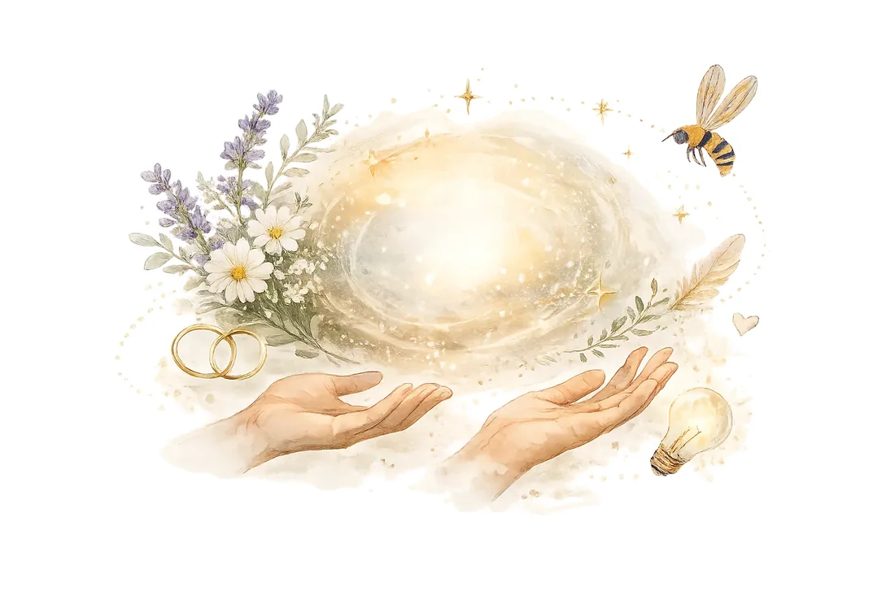
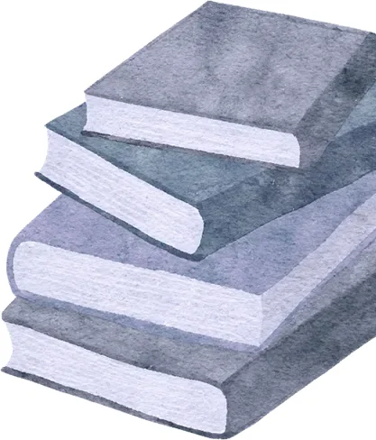

Sincerely Human
The institute’s home for human inquiry: research, reflection, and the models and frameworks that explore shared humanity, human uniqueness, wholeness and transformation.

What we believe humans are
Human beings are collaborative, meaning-making, problem-solving creatures, wired for connection, purpose and contribution. Everything else follows from how we solve problems.
From fear and ego
We fragment. We create winners and losers. We extract from ourselves, from each other, from nature and from the systems we build.
From kindness and curiosity
We harmonize. We listen. We include. We serve a more integrated way of being with each other and with the living world.
The work of Sincerely Human supports the inner journey that lets people move from the first way to the second.
The human architecture
A model of human identity with three inseparable parts. Essence is expressed through the instrument of the body, and then through a life lived in the world.
Essential Self
The intrinsic organizing intelligence of a human being. It is not constructed, learned or performed. It does not need healing. It requires expression.
Physical and Inherited Self
The instrument through which essence expresses: the body, nervous system, genetics and lineage memory. Not a problem to transcend, but the vehicle.
Lived Experience Self
How essence shows up in the world. Aligned with essence, it becomes service. Disconnected from it, it becomes performance.
Choose a circle or a description to see how they pair.
How transformation happens
The journey from performance to presence moves through three phases. It is not a straight line. We cross the bridge many times in a life, and each crossing deepens the return.
- ShapedHow the current world builds humans. Identity fused to role, productivity and outside validation, with essence buried underneath the performance self.
- CrossingWhat happens when the performance self can no longer hold. Collapse as a portal, not a failure, and the difficult, necessary return to essence.
- BecomingEssence as organizing intelligence. Integration over a lifetime, living and leading from wholeness instead of fear.
The crises of our time
This work exists in a specific moment: four converging existential crises, and a sharper question about what is uniquely and innately human.
Planetary
Ecological limits breached by extractive systems. The Earth calling us back to reciprocity.
Economic
Instability, inequality and burnout produced by productivity-driven models.
Social
Fragmentation, polarization and the loss of shared meaning.
Information and disinformation
The fourth crisis surrounds the other three and speeds them up. AI is a powerful accelerant across all of it.
The Three Pillars of Transformation
An applied leadership architecture that holds purpose, human relationships and institutional action in one field. It creates the conditions for transformation. It does not manufacture potential.
Higher Purpose
What are we in service of beyond ourselves? Human and institutional achievement matter in relationship to humanity and the larger living world.
Embodied Trust
Dignity, integrity, presence, candour, psychological safety and reliable action create room for authentic contribution.
Living Roadmap
Strategy, capital, operating capacity, governance, capability, learning and adaptation, brought together in a living pathway.
Relational Coherence
Presence, kindness, curiosity, empathy, compassion, deep listening and love shape how people encounter one another.
Leadership
Leaders steward the whole field: creating conditions for contribution, exercising power with integrity and staying accountable for consequences.
What becomes possible
Human wholeness and well-being, belonging and inclusion, coherent institutions, sustainable contribution, regeneration and harmony.
Two eyes
Sincerely engages contemporary science and evidence alongside Indigenous observation, relational knowledge and understandings of wholeness and the living world.
These ways of knowing are met with intellectual humility and specificity. Neither is silently reduced to the terms of the other, and claims, interpretations and sources stay clearly distinguished.
